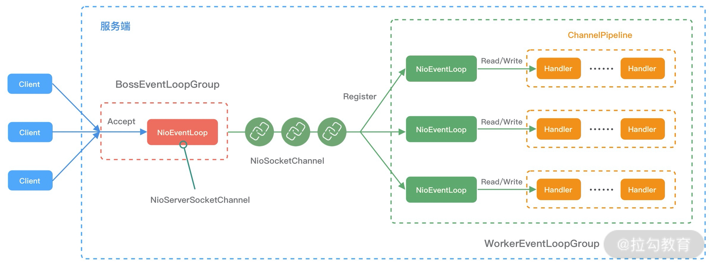
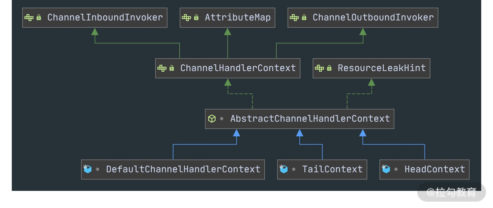
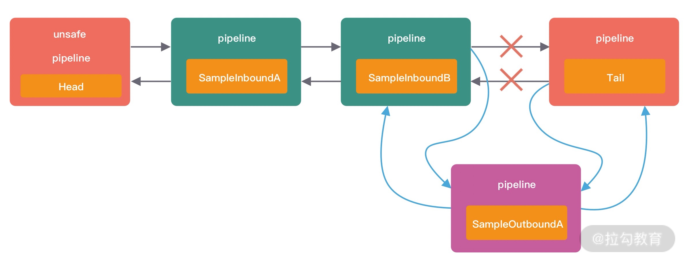
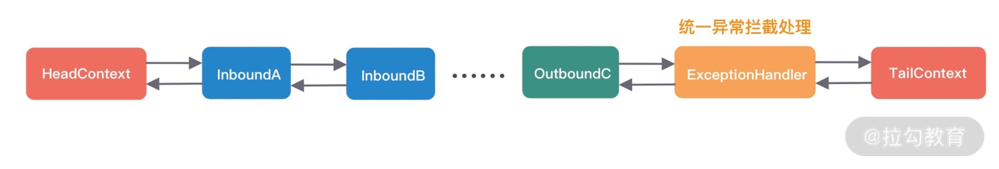

- 00 学好 Netty，是你修炼 Java 内功的必经之路.md.html
- 01 初识 Netty：为什么 Netty 这么流行？.md.html
- 02 纵览全局：把握 Netty 整体架构脉络.md.html
- 03 引导器作用：客户端和服务端启动都要做些什么？.md.html
- 04 事件调度层：为什么 EventLoop 是 Netty 的精髓？.md.html
- 05 服务编排层：Pipeline 如何协调各类 Handler ？.md.html
- 06 粘包拆包问题：如何获取一个完整的网络包？.md.html
- 07 接头暗语：如何利用 Netty 实现自定义协议通信？.md.html
- 08 开箱即用：Netty 支持哪些常用的解码器？.md.html
- 09 数据传输：writeAndFlush 处理流程剖析.md.html
- 10 双刃剑：合理管理 Netty 堆外内存.md.html
- 11 另起炉灶：Netty 数据传输载体 ByteBuf 详解.md.html
- 12 他山之石：高性能内存分配器 jemalloc 基本原理.md.html
- 13 举一反三：Netty 高性能内存管理设计（上）.md.html
- 14 举一反三：Netty 高性能内存管理设计（下）.md.html
- 15 轻量级对象回收站：Recycler 对象池技术解析.md.html
- 16 IO 加速：与众不同的 Netty 零拷贝技术.md.html
- 17 源码篇：从 Linux 出发深入剖析服务端启动流程.md.html
- 18 源码篇：解密 Netty Reactor 线程模型.md.html
- 19 源码篇：一个网络请求在 Netty 中的旅程.md.html
- 20 技巧篇：Netty 的 FastThreadLocal 究竟比 ThreadLocal 快在哪儿？.md.html
- 21 技巧篇：延迟任务处理神器之时间轮 HashedWheelTimer.md.html
- 22 技巧篇：高性能无锁队列 Mpsc Queue.md.html
- 23 架构设计：如何实现一个高性能分布式 RPC 框架.md.html
- 24 服务发布与订阅：搭建生产者和消费者的基础框架.md.html
- 25 远程通信：通信协议设计以及编解码的实现.md.html
- 26 服务治理：服务发现与负载均衡机制的实现.md.html
- 27 动态代理：为用户屏蔽 RPC 调用的底层细节.md.html
- 28 实战总结：RPC 实战总结与进阶延伸.md.html
- 29 编程思想：Netty 中应用了哪些设计模式？.md.html
- 30 实践总结：Netty 在项目开发中的一些最佳实践.md.html
- 31 结束语 技术成长之路：如何打造自己的技术体系.md.html
- 捐赠
19 源码篇：一个网络请求在 Netty 中的旅程
通过前面两节源码课程的学习，我们知道 Netty 在服务端启动时会为创建 NioServerSocketChannel，当客户端新连接接入时又会创建 NioSocketChannel，不管是服务端还是客户端 Channel，在创建时都会初始化自己的 ChannelPipeline。如果把 Netty 比作成一个生产车间，那么 Reactor 线程无疑是车间的中央管控系统，ChannelPipeline 可以看作是车间的流水线，将原材料按顺序进行一步步加工，然后形成一个完整的产品。本节课我将带你完整梳理一遍网络请求在 Netty 中的处理流程，从而加深对前两节课内容的理解，并着重讲解 ChannelPipeline 的工作原理。
说明：本文参考的 Netty 源码版本为 4.1.42.Final。
事件处理机制回顾
首先我们以服务端接入客户端新连接为例，并结合前两节源码课学习的知识点，一起复习下 Netty 的事件处理流程，如下图所示。

Netty 服务端启动后，BossEventLoopGroup 会负责监听客户端的 Accept 事件。当有客户端新连接接入时，BossEventLoopGroup 中的 NioEventLoop 首先会新建客户端 Channel，然后在 NioServerSocketChannel 中触发 channelRead 事件传播，NioServerSocketChannel 中包含了一种特殊的处理器 ServerBootstrapAcceptor，最终通过 ServerBootstrapAcceptor 的 channelRead() 方法将新建的客户端 Channel 分配到 WorkerEventLoopGroup 中。WorkerEventLoopGroup 中包含多个 NioEventLoop，它会选择其中一个 NioEventLoop 与新建的客户端 Channel 绑定。
完成客户端连接注册之后，就可以接收客户端的请求数据了。当客户端向服务端发送数据时，NioEventLoop 会监听到 OP_READ 事件，然后分配 ByteBuf 并读取数据，读取完成后将数据传递给 Pipeline 进行处理。一般来说，数据会从 ChannelPipeline 的第一个 ChannelHandler 开始传播，将加工处理后的消息传递给下一个 ChannelHandler，整个过程是串行化执行。
在前面两节课中，我们介绍了服务端如何接收客户端新连接，以及 NioEventLoop 的工作流程，接下来我们重点介绍 ChannelPipeline 是如何实现 Netty 事件驱动的，这样 Netty 整个事件处理流程已经可以串成一条主线。
Pipeline 的初始化
我们知道 ChannelPipeline 是在创建 Channel 时被创建的，它是 Channel 中非常重要的一个成员变量。回到 AbstractChannel 的构造函数，以此为切入点，我们一起看下 ChannelPipeline 是如何一步步被构造出来的。
// AbstractChannel
protected AbstractChannel(Channel parent) {
this.parent = parent;
id = newId();
unsafe = newUnsafe();
pipeline = newChannelPipeline();
}
// AbstractChannel#newChannelPipeline
protected DefaultChannelPipeline newChannelPipeline() {
return new DefaultChannelPipeline(this);
}
// DefaultChannelPipeline
protected DefaultChannelPipeline(Channel channel) {
this.channel = ObjectUtil.checkNotNull(channel, "channel");
succeededFuture = new SucceededChannelFuture(channel, null);
voidPromise = new VoidChannelPromise(channel, true);
tail = new TailContext(this);
head = new HeadContext(this);
head.next = tail;
tail.prev = head;
}
当 ChannelPipeline 初始化完成后，会构成一个由 ChannelHandlerContext 对象组成的双向链表，默认 ChannelPipeline 初始化状态的最小结构仅包含 HeadContext 和 TailContext 两个节点，如下图所示。

HeadContext 和 TailContext 属于 ChannelPipeline 中两个特殊的节点，它们都继承自 AbstractChannelHandlerContext，根据源码看下 AbstractChannelHandlerContext 有哪些实现类，如下图所示。除了 HeadContext 和 TailContext，还有一个默认实现类 DefaultChannelHandlerContext，我们可以猜到 DefaultChannelHandlerContext 封装的是用户在 Netty 启动配置类中添加的自定义业务处理器，DefaultChannelHandlerContext 会插入到 HeadContext 和 TailContext 之间。

接着我们比较一下上述三种 AbstractChannelHandlerContext 实现类的内部结构，发现它们都包含当前 ChannelPipeline 的引用、处理器 ChannelHandler。有一点不同的是 HeadContext 节点还包含了用于操作底层数据读写的 unsafe 对象。对于 Inbound 事件，会先从 HeadContext 节点开始传播，所以 unsafe 可以看作是 Inbound 事件的发起者；对于 Outbound 事件，数据最后又会经过 HeadContext 节点返回给客户端，此时 unsafe 可以看作是 Outbound 事件的处理者。
接下来我们继续看下用户自定义的处理器是如何加入 ChannelPipeline 的双向链表的。
Pipeline 添加 Handler
在 Netty 客户端或者服务端启动时，就需要用户配置自定义实现的业务处理器。我们先看一段服务端启动类的代码片段：
ServerBootstrap b = new ServerBootstrap();
b.group(bossGroup, workerGroup)
.channel(NioServerSocketChannel.class)
.childHandler(new ChannelInitializer<SocketChannel>() {
@Override
public void initChannel(SocketChannel ch) {
ch.pipeline().addLast(new SampleInboundA());
ch.pipeline().addLast(new SampleInboundB());
ch.pipeline().addLast(new SampleOutboundA());
ch.pipeline().addLast(new SampleOutboundB());
}
});
我们知道 ChannelPipeline 分为入站 ChannelInboundHandler 和出站 ChannelOutboundHandler 两种处理器，它们都会被 ChannelHandlerContext 封装，不管是哪种处理器，最终都是通过双向链表连接，代码示例中构成的 ChannelPipeline 的结构如下。

那么 ChannelPipeline 在添加 Handler 时是如何区分 Inbound 和 Outbound 类型的呢？我们一起跟进 ch.pipeline().addLast() 方法源码，定位到核心代码如下。
public final ChannelPipeline addLast(EventExecutorGroup group, String name, ChannelHandler handler) {
final AbstractChannelHandlerContext newCtx;
synchronized (this) {
// 1. 检查是否重复添加 Handler
checkMultiplicity(handler);
// 2. 创建新的 DefaultChannelHandlerContext 节点
newCtx = newContext(group, filterName(name, handler), handler);
// 3. 添加新的 DefaultChannelHandlerContext 节点到 ChannelPipeline
addLast0(newCtx);
// 省略其他代码
}
// 4. 回调用户方法
callHandlerAdded0(newCtx);
return this;
}
addLast() 主要做了以下四件事：
- 检查是否重复添加 Handler。
- 创建新的 DefaultChannelHandlerContext 节点。
- 添加新的 DefaultChannelHandlerContext 节点到 ChannelPipeline。
- 回调用户方法。
前三个步骤通过 synchronized 加锁完成的，为了防止多线程并发操作 ChannelPipeline 底层双向链表。下面我们一步步进行拆解介绍。
首先在添加 Handler 时，ChannelPipeline 会检查该 Handler 有没有被添加过。如果一个非线程安全的 Handler 被添加到 ChannelPipeline 中，那么当多线程访问时会造成线程安全问题。Netty 具体检查重复性的逻辑由 checkMultiplicity() 方法实现：
private static void checkMultiplicity(ChannelHandler handler) {
if (handler instanceof ChannelHandlerAdapter) {
ChannelHandlerAdapter h = (ChannelHandlerAdapter) handler;
if (!h.isSharable() && h.added) {
throw new ChannelPipelineException(
h.getClass().getName() +
" is not a @Sharable handler, so can't be added or removed multiple times.");
}
h.added = true;
}
}
用户自定义实现的处理一般都继承于 ChannelHandlerAdapter，ChannelHandlerAdapter 中使用 added 变量标识该 Handler 是否被添加过。如果当前添加的 Handler 是非共享且已被添加过，那么就会抛出异常，否则将当前 Handler 标记为已添加。
h.isSharable() 用于判断 Handler 是否是共享的，所谓共享就是这个 Handler 可以被重复添加到不同的 ChannelPipeline 中，共享的 Handler 必须要确保是线程安全的。如果我们想实现一个共享的 Handler，只需要在 Handler 中添加 @Sharable 注解即可，如下所示：
@ChannelHandler.Sharable
public class SampleInBoundHandler extends ChannelInboundHandlerAdapter {}
接下来我们分析 addLast() 的第二步，创建新的 DefaultChannelHandlerContext 节点。在执行 newContext() 方法之前，会通过 filterName() 为 Handler 创建一个唯一的名称，一起先看下 Netty 生成名称的策略是怎样的。
private String filterName(String name, ChannelHandler handler) {
if (name == null) {
return generateName(handler);
}
checkDuplicateName(name);
return name;
}
private String generateName(ChannelHandler handler) {
Map<Class<?>, String> cache = nameCaches.get();
Class<?> handlerType = handler.getClass();
String name = cache.get(handlerType);
if (name == null) {
name = generateName0(handlerType);
cache.put(handlerType, name);
}
if (context0(name) != null) {
String baseName = name.substring(0, name.length() - 1);
for (int i = 1;; i ++) {
String newName = baseName + i;
if (context0(newName) == null) {
name = newName;
break;
}
}
}
return name;
}
private static String generateName0(Class<?> handlerType) {
return StringUtil.simpleClassName(handlerType) + "#0";
}
Netty 会使用 FastThreadLocal 缓存 Handler 和名称的映射关系，在为 Handler 生成默认名称的之前，会先从缓存中查找是否已经存在，如果不存在，会调用 generateName0() 方法生成默认名称后，并加入缓存。可以看出 Netty 生成名称的默认规则是 “简单类名#0”，例如 HeadContext 的默认名称为 “DefaultChannelPipeline$HeadContext#0”。
为 Handler 生成完默认名称之后，还会通过 context0() 方法检查生成的名称是否和 ChannelPipeline 已有的名称出现冲突，查重的过程很简单，就是对双向链表进行线性搜索。如果存在冲突现象，Netty 会将名称最后的序列号截取出来，一直递增直至生成不冲突的名称为止，例如 “简单类名#1” “简单类名#2” “简单类名#3” 等等。
接下来回到 newContext() 创建节点的流程，可以定位到 AbstractChannelHandlerContext 的构造函数：
AbstractChannelHandlerContext(DefaultChannelPipeline pipeline, EventExecutor executor,
String name, Class<? extends ChannelHandler> handlerClass) {
this.name = ObjectUtil.checkNotNull(name, "name");
this.pipeline = pipeline;
this.executor = executor;
this.executionMask = mask(handlerClass);
ordered = executor == null || executor instanceof OrderedEventExecutor;
}
AbstractChannelHandlerContext 中有一个 executionMask 属性并不是很好理解，它其实是一种常用的掩码运算操作，看下 mask() 方法是如何生成掩码的呢？
private static int mask0(Class<? extends ChannelHandler> handlerType) {
int mask = MASK_EXCEPTION_CAUGHT;
try {
if (ChannelInboundHandler.class.isAssignableFrom(handlerType)) {
// 如果是 ChannelInboundHandler 实例，所有 Inbound 事件置为 1
mask |= MASK_ALL_INBOUND;
// 排除 Handler 不感兴趣的 Inbound 事件
if (isSkippable(handlerType, "channelRegistered", ChannelHandlerContext.class)) {
mask &= ~MASK_CHANNEL_REGISTERED;
}
if (isSkippable(handlerType, "channelUnregistered", ChannelHandlerContext.class)) {
mask &= ~MASK_CHANNEL_UNREGISTERED;
}
if (isSkippable(handlerType, "channelActive", ChannelHandlerContext.class)) {
mask &= ~MASK_CHANNEL_ACTIVE;
}
if (isSkippable(handlerType, "channelInactive", ChannelHandlerContext.class)) {
mask &= ~MASK_CHANNEL_INACTIVE;
}
if (isSkippable(handlerType, "channelRead", ChannelHandlerContext.class, Object.class)) {
mask &= ~MASK_CHANNEL_READ;
}
if (isSkippable(handlerType, "channelReadComplete", ChannelHandlerContext.class)) {
mask &= ~MASK_CHANNEL_READ_COMPLETE;
}
if (isSkippable(handlerType, "channelWritabilityChanged", ChannelHandlerContext.class)) {
mask &= ~MASK_CHANNEL_WRITABILITY_CHANGED;
}
if (isSkippable(handlerType, "userEventTriggered", ChannelHandlerContext.class, Object.class)) {
mask &= ~MASK_USER_EVENT_TRIGGERED;
}
}
if (ChannelOutboundHandler.class.isAssignableFrom(handlerType)) {
// 如果是 ChannelOutboundHandler 实例，所有 Outbound 事件置为 1
mask |= MASK_ALL_OUTBOUND;
// 排除 Handler 不感兴趣的 Outbound 事件
if (isSkippable(handlerType, "bind", ChannelHandlerContext.class,
SocketAddress.class, ChannelPromise.class)) {
mask &= ~MASK_BIND;
}
if (isSkippable(handlerType, "connect", ChannelHandlerContext.class, SocketAddress.class,
SocketAddress.class, ChannelPromise.class)) {
mask &= ~MASK_CONNECT;
}
if (isSkippable(handlerType, "disconnect", ChannelHandlerContext.class, ChannelPromise.class)) {
mask &= ~MASK_DISCONNECT;
}
if (isSkippable(handlerType, "close", ChannelHandlerContext.class, ChannelPromise.class)) {
mask &= ~MASK_CLOSE;
}
if (isSkippable(handlerType, "deregister", ChannelHandlerContext.class, ChannelPromise.class)) {
mask &= ~MASK_DEREGISTER;
}
if (isSkippable(handlerType, "read", ChannelHandlerContext.class)) {
mask &= ~MASK_READ;
}
if (isSkippable(handlerType, "write", ChannelHandlerContext.class,
Object.class, ChannelPromise.class)) {
mask &= ~MASK_WRITE;
}
if (isSkippable(handlerType, "flush", ChannelHandlerContext.class)) {
mask &= ~MASK_FLUSH;
}
}
if (isSkippable(handlerType, "exceptionCaught", ChannelHandlerContext.class, Throwable.class)) {
mask &= ~MASK_EXCEPTION_CAUGHT;
}
} catch (Exception e) {
PlatformDependent.throwException(e);
}
return mask;
}
Netty 中分别有多种 Inbound 事件和 Outbound 事件，如 Inbound 事件有 channelRegistered、channelActive、channelRead 等等。Netty 会判断 Handler 的类型是否是 ChannelInboundHandler 的实例，如果是会把所有 Inbound 事件先置为 1，然后排除 Handler 不感兴趣的方法。同理，Handler 类型如果是 ChannelOutboundHandler，也是这么实现的。
那么如何排除 Handler 不感兴趣的事件呢？Handler 对应事件的方法上如果有 @Skip 注解，Netty 认为该事件是需要排除的。大部分情况下，用户自定义实现的 Handler 只需要关心个别事件，那么剩余不关心的方法都需要加上 @Skip 注解吗？Netty 其实已经在 ChannelHandlerAdapter 中默认都添加好了，所以用户如果继承了 ChannelHandlerAdapter，默认没有重写的方法都是加上 @Skip 的，只有用户重写的方法才是 Handler 关心的事件。
回到 addLast() 的主流程，接着需要将新创建的 DefaultChannelHandlerContext 节点添加到 ChannelPipeline 中，跟进 addLast0() 方法的源码。
private void addLast0(AbstractChannelHandlerContext newCtx) {
AbstractChannelHandlerContext prev = tail.prev;
newCtx.prev = prev;
newCtx.next = tail;
prev.next = newCtx;
tail.prev = newCtx;
}
addLast0() 非常简单，就是向 ChannelPipeline 中双向链表的尾部插入新的节点，其中 HeadContext 和 TailContext 一直是链表的头和尾，新的节点被插入到 HeadContext 和 TailContext 之间。例如代码示例中 SampleOutboundA 被添加时，双向链表的结构变化如下所示。

最后，添加完节点后，就到了回调用户方法，定位到 callHandlerAdded() 的核心源码：
final void callHandlerAdded() throws Exception {
if (setAddComplete()) {
handler().handlerAdded(this);
}
}
final boolean setAddComplete() {
for (;;) {
int oldState = handlerState;
if (oldState == REMOVE_COMPLETE) {
return false;
}
if (HANDLER_STATE_UPDATER.compareAndSet(this, oldState, ADD_COMPLETE)) {
return true;
}
}
}
Netty 会通过 CAS 修改节点的状态直至 REMOVE_COMPLETE 或者 ADD_COMPLETE，如果修改节点为 ADD_COMPLETE 状态，表示节点已经添加成功，然后会回调用户 Handler 中实现的 handlerAdded() 方法。
至此，Pipeline 添加 Handler 的实现原理我们已经讲完了，下面接着看下 Pipeline 删除 Handler 的场景。
Pipeline 删除 Handler
在《源码篇：从 Linux 出发深入剖析服务端启动流程》的课程中我们介绍了一种特殊的处理器 ChannelInitializer，ChannelInitializer 在服务端 Channel 注册完成之后会从 Pipeline 的双向链表中移除，我们一起回顾下这段代码：
private boolean initChannel(ChannelHandlerContext ctx) throws Exception {
if (initMap.add(ctx)) {
try {
initChannel((C) ctx.channel()); // 调用 ChannelInitializer 实现的 initChannel() 方法
} catch (Throwable cause) {
exceptionCaught(ctx, cause);
} finally {
ChannelPipeline pipeline = ctx.pipeline();
if (pipeline.context(this) != null) {
pipeline.remove(this); // 将 ChannelInitializer 自身从 Pipeline 中移出
}
}
return true;
}
return false;
}
继续跟进 pipeline.remove() 的源码。
@Override
public final ChannelPipeline remove(ChannelHandler handler) {
// 1. getContextOrDie 用于查找需要删除的节点
remove(getContextOrDie(handler));
return this;
}
private AbstractChannelHandlerContext remove(final AbstractChannelHandlerContext ctx) {
assert ctx != head && ctx != tail;
synchronized (this) {
// 删除双向链表中的 Handler 节点
atomicRemoveFromHandlerList(ctx);
if (!registered) {
callHandlerCallbackLater(ctx, false);
return ctx;
}
EventExecutor executor = ctx.executor();
if (!executor.inEventLoop()) {
executor.execute(new Runnable() {
@Override
public void run() {
callHandlerRemoved0(ctx);
}
});
return ctx;
}
}
// 3. 回调用户函数
callHandlerRemoved0(ctx);
return ctx;
}
整个删除 Handler 的过程可以分为三步，分别为：
- 查找需要删除的 Handler 节点；
- 然后删除双向链表中的 Handler 节点；
- 最后回调用户函数。
我们对每一步逐一进行拆解。
第一步查找需要删除的 Handler 节点，我们自然可以想到通过遍历双向链表实现。一起看下 getContextOrDie() 方法的源码：
private AbstractChannelHandlerContext getContextOrDie(ChannelHandler handler) {
AbstractChannelHandlerContext ctx = (AbstractChannelHandlerContext) context(handler);
if (ctx == null) {
throw new NoSuchElementException(handler.getClass().getName());
} else {
return ctx;
}
}
public final ChannelHandlerContext context(ChannelHandler handler) {
if (handler == null) {
throw new NullPointerException("handler");
}
// 遍历双向链表查找
AbstractChannelHandlerContext ctx = head.next;
for (;;) {
if (ctx == null) {
return null;
}
// 如果 Handler 相同，返回当前的 Context 节点
if (ctx.handler() == handler) {
return ctx;
}
ctx = ctx.next;
}
}
Netty 确实是从双向链表的头结点开始依次遍历，如果当前 Context 节点的 Handler 要被删除的 Handler 相同，那么便找到了要删除的 Handler，然后返回当前 Context 节点。
找到需要删除的 Handler 节点之后，接下来就是将节点从双向链表中删除，再跟进atomicRemoveFromHandlerList() 方法的源码：
private synchronized void atomicRemoveFromHandlerList(AbstractChannelHandlerContext ctx) {
AbstractChannelHandlerContext prev = ctx.prev;
AbstractChannelHandlerContext next = ctx.next;
prev.next = next;
next.prev = prev;
}
删除节点和添加节点类似，都是基本的链表操作，通过调整双向链表的指针即可实现。假设现在需要删除 SampleOutboundA 节点，我们以一幅图来表示删除时指针的变化过程，如下所示。

删除完节点之后，最后 Netty 会回调用户自定义实现的 handlerRemoved() 方法，回调的实现过程与添加节点时是类似的，在这里我就不赘述了。
到此为止，我们已经学会了 ChannelPipeline 内部结构的基本操作，只需要基本的链表操作就可以实现 Handler 节点的添加和删除，添加时通过掩码运算的方式排出 Handler 不关心的事件。 ChannelPipeline 是如何调度 Handler 的呢？接下来我们继续学习。
数据在 Pipeline 中的运转
我们知道，根据数据的流向，ChannelPipeline 分为入站 ChannelInboundHandler 和出站 ChannelOutboundHandler 两种处理器。Inbound 事件和 Outbound 事件的传播方向相反，Inbound 事件的传播方向为 Head -> Tail，而 Outbound 事件传播方向是 Tail -> Head。今天我们就以客户端和服务端请求-响应的场景，深入研究 ChannelPipeline 的事件传播机制。
Inbound 事件传播
当客户端向服务端发送数据时，服务端是如何接收的呢？回顾下之前我们所学习的 Netty Reactor 线程模型，首先 NioEventLoop 会不断轮询 OP_ACCEPT 和 OP_READ 事件，当事件就绪时，NioEventLoop 会及时响应。首先定位到 NioEventLoop 中源码的入口：
// NioEventLoop#processSelectedKey
if ((readyOps & (SelectionKey.OP_READ | SelectionKey.OP_ACCEPT)) != 0 || readyOps == 0) {
unsafe.read();
}
可以看出 unsafe.read() 会触发后续事件的处理，有一点需要避免混淆，在服务端 Channel 和客户端 Channel 中绑定的 unsafe 对象是不一样的，因为服务端 Channel 只关心如何接收客户端连接，而客户端 Channel 需要关心数据的读写。这里我们重点分析一下客户端 Channel 读取数据的过程，跟进 unsafe.read() 的源码：
public final void read() {
final ChannelConfig config = config();
// 省略其他代码
final ChannelPipeline pipeline = pipeline();
final ByteBufAllocator allocator = config.getAllocator();
final RecvByteBufAllocator.Handle allocHandle = recvBufAllocHandle();
allocHandle.reset(config);
ByteBuf byteBuf = null;
boolean close = false;
try {
do {
byteBuf = allocHandle.allocate(allocator); // 分配 ByteBuf
allocHandle.lastBytesRead(doReadBytes(byteBuf)); // 将 Channel 中的数据读到 ByteBuf 中
if (allocHandle.lastBytesRead() <= 0) {
byteBuf.release();
byteBuf = null;
close = allocHandle.lastBytesRead() < 0;
if (close) {
readPending = false;
}
break;
}
allocHandle.incMessagesRead(1);
readPending = false;
pipeline.fireChannelRead(byteBuf); // 传播 ChannelRead 事件
byteBuf = null;
} while (allocHandle.continueReading());
allocHandle.readComplete();
pipeline.fireChannelReadComplete(); // 传播 readComplete 事件
if (close) {
closeOnRead(pipeline);
}
} catch (Throwable t) {
handleReadException(pipeline, byteBuf, t, close, allocHandle);
} finally {
if (!readPending && !config.isAutoRead()) {
removeReadOp();
}
}
}
Netty 会不断从 Channel 中读取数据到分配的 ByteBuf 中，然后通过 pipeline.fireChannelRead() 方法触发 ChannelRead 事件的传播，fireChannelRead() 是我们需要重点分析的对象。
// DefaultChannelPipeline
public final ChannelPipeline fireChannelRead(Object msg) {
AbstractChannelHandlerContext.invokeChannelRead(head, msg);
return this;
}
// AbstractChannelHandlerContext
static void invokeChannelRead(final AbstractChannelHandlerContext next, Object msg) {
final Object m = next.pipeline.touch(ObjectUtil.checkNotNull(msg, "msg"), next);
EventExecutor executor = next.executor();
if (executor.inEventLoop()) { // 当前在 Reactor 线程内部，直接执行
next.invokeChannelRead(m);
} else {
executor.execute(new Runnable() { // 如果是外部线程，则提交给异步任务队列
@Override
public void run() {
next.invokeChannelRead(m);
}
});
}
}
Netty 首先会以 Head 节点为入参，直接调用一个静态方法 invokeChannelRead()。如果当前是在 Reactor 线程内部，会直接执行 next.invokeChannelRead() 方法。如果是外部线程发起的调用，Netty 会把 next.invokeChannelRead() 调用封装成异步任务提交到任务队列。通过之前对 NioEventLoop 源码的学习，我们知道这样可以保证执行流程全部控制在当前 NioEventLoop 线程内部串行化执行，确保线程安全性。我们抓住核心逻辑 next.invokeChannelRead() 继续跟进。
// AbstractChannelHandlerContext
private void invokeChannelRead(Object msg) {
if (invokeHandler()) {
try {
((ChannelInboundHandler) handler()).channelRead(this, msg);
} catch (Throwable t) {
notifyHandlerException(t);
}
} else {
fireChannelRead(msg);
}
}
可以看出，当前 ChannelHandlerContext 节点会取出自身对应的 Handler，执行 Handler 的 channelRead 方法。此时当前节点是 HeadContext，所以 Inbound 事件是从 HeadContext 节点开始进行传播的，看下 HeadContext.channelRead() 是如何实现的。
// HeadContext
public void channelRead(ChannelHandlerContext ctx, Object msg) {
ctx.fireChannelRead(msg);
}
// AbstractChannelHandlerContext
public ChannelHandlerContext fireChannelRead(final Object msg) {
// 找到下一个节点，执行 invokeChannelRead
invokeChannelRead(findContextInbound(MASK_CHANNEL_READ), msg);
return this;
}
我们发现 HeadContext.channelRead() 并没有做什么特殊操作，而是直接通过 fireChannelRead() 方法继续将读事件继续传播下去。接下来 Netty 会通过 findContextInbound(MASK_CHANNEL_READ), msg) 找到 HeadContext 的下一个节点，然后继续执行我们之前介绍的静态方法 invokeChannelRead()，从而进入一个递归调用的过程，直至某个条件结束。以上 channelRead 的执行过程我们可以梳理成一幅流程图：

Netty 是如何判断 InboundHandler 是否关心 channelRead 事件呢？这就涉及findContextInbound(MASK_CHANNEL_READ), msg) 中的一个知识点，和上文中我们介绍的 executionMask 掩码运算是息息相关的。首先看下 findContextInbound() 的源码：
private AbstractChannelHandlerContext findContextInbound(int mask) {
AbstractChannelHandlerContext ctx = this;
do {
ctx = ctx.next;
} while ((ctx.executionMask & mask) == 0);
return ctx;
}
MASK_CHANNEL_READ 的值为 1 << 5，表示 channelRead 事件所在的二进制位已被置为 1。在代码示例中，SampleInboundA 是我们添加的 Inbound 类型的自定义处理器，它所对应的 executionMask 掩码和 MASK_CHANNEL_READ 进行与运算的结果如果不为 0，表示 SampleInboundA 对 channelRead 事件感兴趣，需要触发执行 SampleInboundA 的 channelRead() 方法。
Inbound 事件在上述递归调用的流程中什么时候能够结束呢？有以下两种情况：
- 用户自定义的 Handler 没有执行 fireChannelRead() 操作，则在当前 Handler 终止 Inbound 事件传播。
- 如果用户自定义的 Handler 都执行了 fireChannelRead() 操作，Inbound 事件传播最终会在 TailContext 节点终止。
接下来，我们着重看下 TailContext 节点做了哪些工作。
public void channelRead(ChannelHandlerContext ctx, Object msg) {
onUnhandledInboundMessage(ctx, msg);
}
protected void onUnhandledInboundMessage(Object msg) {
try {
logger.debug(
"Discarded inbound message {} that reached at the tail of the pipeline. " +
"Please check your pipeline configuration.", msg);
} finally {
ReferenceCountUtil.release(msg);
}
}
可以看出 TailContext 只是日志记录了丢弃的 Inbound 消息，并释放 ByteBuf 做一个兜底保护，防止内存泄漏。
到此为止，Inbound 事件的传播流程已经介绍完了，Inbound 事件在 ChannelPipeline 中的传播方向是 Head -> Tail。Netty 会从 ChannelPipeline 中找到对传播事件感兴趣的 Inbound 处理器，执行事件回调方法，然后继续向下一个节点传播，整个事件传播流程是一个递归调用的过程。
Outbound 事件传播
分析完 Inbound 事件的传播流程之后，再学习 Outbound 事件传播就会简单很多。Outbound 事件传播的方向是从 Tail -> Head，与 Inbound 事件的传播方向恰恰是相反的。Outbound 事件最常见的就是写事件，执行 writeAndFlush() 方法时就会触发 Outbound 事件传播。我们直接从 TailContext 跟进 writeAndFlush() 源码：
@Override
public final ChannelFuture writeAndFlush(Object msg) {
return tail.writeAndFlush(msg);
}
继续跟进 tail.writeAndFlush() 的源码，最终会定位到 AbstractChannelHandlerContext 中的 write 方法。该方法是 writeAndFlush 的核心逻辑，具体源码如下。
private void write(Object msg, boolean flush, ChannelPromise promise) {
// ...... 省略部分非核心代码 ......
// 找到 Pipeline 链表中下一个 Outbound 类型的 ChannelHandler 节点
final AbstractChannelHandlerContext next = findContextOutbound(flush ?
(MASK_WRITE | MASK_FLUSH) : MASK_WRITE);
final Object m = pipeline.touch(msg, next);
EventExecutor executor = next.executor();
// 判断当前线程是否是 NioEventLoop 中的线程
if (executor.inEventLoop()) {
if (flush) {
// 因为 flush == true，所以流程走到这里
next.invokeWriteAndFlush(m, promise);
} else {
next.invokeWrite(m, promise);
}
} else {
final AbstractWriteTask task;
if (flush) {
task = WriteAndFlushTask.newInstance(next, m, promise);
} else {
task = WriteTask.newInstance(next, m, promise);
}
if (!safeExecute(executor, task, promise, m)) {
task.cancel();
}
}
}
在《数据传输：writeAndFlush 处理流程剖析》的课程中，我们已经对 write() 方法做了深入分析，这里抛开其他技术细节，我们只分析 Outbound 事件传播的过程。
假设我们在代码示例中 SampleOutboundB 调用了 writeAndFlush() 方法，那么 Netty 会调用 findContextOutbound() 方法找到 Pipeline 链表中下一个 Outbound 类型的 ChannelHandler，对应上述代码示例中下一个 Outbound 节点是 SampleOutboundA，然后调用 next.invokeWriteAndFlush(m, promise)，我们跟进去：
private void invokeWriteAndFlush(Object msg, ChannelPromise promise) {
if (invokeHandler()) {
invokeWrite0(msg, promise);
invokeFlush0();
} else {
writeAndFlush(msg, promise);
}
}
private void invokeWrite0(Object msg, ChannelPromise promise) {
try {
((ChannelOutboundHandler) handler()).write(this, msg, promise);
} catch (Throwable t) {
notifyOutboundHandlerException(t, promise);
}
}
我们发现，invokeWriteAndFlush() 方法最终会它会执行下一个 ChannelHandler 节点的 write 方法。一般情况下，用户在实现 outBound 类型的 ChannelHandler 时都会继承 ChannelOutboundHandlerAdapter，一起看下它的 write() 方法是如何处理 outBound 事件的。
public void write(ChannelHandlerContext ctx, Object msg, ChannelPromise promise) throws Exception {
ctx.write(msg, promise);
}
ChannelOutboundHandlerAdapter.write() 只是调用了 AbstractChannelHandlerContext 的 write() 方法，是不是似曾相识？与之前介绍的 Inbound 事件处理流程类似，此时流程又回到了 AbstractChannelHandlerContext 中重复执行 write 方法，继续寻找下一个 Outbound 节点，也是一个递归调用的过程。
编码器是用户经常需要自定义实现的处理器，然而为什么用户的编码器里并没有重写 write()，只是重写一个 encode() 方法呢？在《Netty 如何实现自定义通信协议》课程中，我们所介绍的 MessageToByteEncoder 源码，用户自定义的编码器基本都会继承 MessageToByteEncoder，MessageToByteEncoder 重写了 ChanneOutboundHandler 的 write() 方法，其中会调用子类实现的 encode 方法完成数据编码，这里我们不再赘述了。
那么 OutBound 事件什么时候传播结束呢？也许你已经猜到了，OutBound 事件最终会传播到 HeadContext 节点。所以 HeadContext 节点既是 Inbound 处理器，又是 OutBound 处理器，继续看下 HeadContext 是如何拦截和处理 write 事件的。
public void write(ChannelHandlerContext ctx, Object msg, ChannelPromise promise) {
unsafe.write(msg, promise);
}
HeadContext 最终调用了底层的 unsafe 写入数据，数据在执行 write() 方法时，只会写入到一个底层的缓冲数据结构，然后等待 flush 操作将数据冲刷到 Channel 中。关于 write 和 flush 是如何操作缓存数据结构的，快去复习一遍《数据传输：writeAndFlush 处理流程剖析》吧，将知识点形成一个完整的体系。
到此为止，outbound 事件传播也介绍完了，它的传播方向是 Tail -> Head，与 Inbound 事件的传播是相反的。MessageToByteEncoder 是用户在实现编码时经常用到的一个抽象类，MessageToByteEncoder 中已经重写了 ChanneOutboundHandler 的 write() 方法，大部分情况下用户只需要重写 encode() 即可。
异常事件传播
在《服务编排层：Pipeline 如何协调各类 Handler》中，我们已经初步介绍了 Netty 实现统一异常拦截和处理的最佳实践，首先回顾下异常拦截器的简单实现。
public class ExceptionHandler extends ChannelDuplexHandler {
@Override
public void exceptionCaught(ChannelHandlerContext ctx, Throwable cause) {
if (cause instanceof RuntimeException) {
System.out.println("Handle Business Exception Success.");
}
}
}
异常处理器 ExceptionHandler 一般会继承 ChannelDuplexHandler，ChannelDuplexHandler 既是一个 Inbound 处理器，又是一个 Outbound 处理器。ExceptionHandler 应该被添加在自定义处理器的尾部，如下图所示：

那么异常处理器 ExceptionHandler 什么时候被执行呢？我们分别从 Inbound 异常事件传播和 Outbound 异常事件传播两种场景进行分析。
首先看下 Inbound 异常事件的传播。还是从数据读取的场景入手，发现 Inbound 事件传播的时候有异常处理的相关逻辑，我们再一起重新分析下数据读取环节的源码。
// AbstractChannelHandlerContext
private void invokeChannelRead(Object msg) {
if (invokeHandler()) {
try {
((ChannelInboundHandler) handler()).channelRead(this, msg);
} catch (Throwable t) {
notifyHandlerException(t);
}
} else {
fireChannelRead(msg);
}
}
// AbstractChannelHandlerContext
private void notifyHandlerException(Throwable cause) {
// 省略其他代码
invokeExceptionCaught(cause);
}
// AbstractChannelHandlerContext
private void invokeExceptionCaught(final Throwable cause) {
if (invokeHandler()) {
try {
handler().exceptionCaught(this, cause); // 调用 Handler 实现的 exceptionCaught 方法
} catch (Throwable error) {
// 省略其他代码
}
} else {
fireExceptionCaught(cause);
}
}
如果 SampleInboundA 在读取数据时发生了异常，invokeChannelRead 会捕获异常，并执行 notifyHandlerException() 方法进行异常处理。我们一步步跟进，发现最终会调用 Handler 的 exceptionCaught() 方法，所以用户可以通过重写 exceptionCaught() 实现自定义的异常处理。
我们知道，统一异常处理器 ExceptionHandler 是在 ChannelPipeline 的末端，SampleInboundA 并没有重写 exceptionCaught() 方法，那么 SampleInboundA 产生的异常是如何传播到 ExceptionHandler 中呢？用户实现的 Inbound 处理器一般都会继承 ChannelInboundHandlerAdapter 抽象类，果然我们在 ChannelInboundHandlerAdapter 中发现了 exceptionCaught() 的实现：
// ChannelInboundHandlerAdapter
public void exceptionCaught(ChannelHandlerContext ctx, Throwable cause)
throws Exception {
ctx.fireExceptionCaught(cause);
}
// AbstractChannelHandlerContext
public ChannelHandlerContext fireExceptionCaught(final Throwable cause) {
invokeExceptionCaught(findContextInbound(MASK_EXCEPTION_CAUGHT), cause);
return this;
}
ChannelInboundHandlerAdapter 默认调用 fireExceptionCaught() 方法传播异常事件，而 fireExceptionCaught() 执行时会先调用 findContextInbound() 方法找到下一个对异常事件关注的 Inbound 处理器，然后继续向下传播异常。所以这里应该明白为什么统一异常处理器 ExceptionHandler 为什么需要添加在 ChannelPipeline 的末端了吧？这样 ExceptionHandler 可以接收所有 Inbound 处理器发生的异常。
接下来，我们分析 Outbound 异常事件传播。你可能此时就会有一个疑问，Outbound 事件的传播方向与 Inbound 事件是相反的，为什么统一异常处理器 ExceptionHandler 没有添加在 ChannelPipeline 的头部呢？我们通过 writeAndFlush() 的调用过程再来一探究竟。
// AbstractChannelHandlerContext
private void invokeFlush0() {
try {
((ChannelOutboundHandler) handler()).flush(this);
} catch (Throwable t) {
notifyHandlerException(t);
}
}
我们发现，flush 发送数据时如果发生异常，那么异常也会被捕获并交由同样的 notifyHandlerException() 方法进行处理。因为 notifyHandlerException() 方法中会向下寻找 Inbound 处理器，此时又会回到 Inbound 异常事件的传播流程。所以说，异常事件的传播方向与 Inbound 事件几乎是一样的，最后一定会传播到统一异常处理器 ExceptionHandler。
到这里，整个异常事件的传播过程已经分析完了。你需要记住的是，异常事件的传播顺序与 ChannelHandler 的添加顺序相同，会依次向后传播，与 Inbound 事件和 Outbound 事件无关。
总结
这节点我们学习了数据在 Netty 中的完整处理流程，其中重点分析了数据是如何在 ChannelPipeline 中流转的。我们做一个知识点总结：
- ChannelPipeline 是双向链表结构，包含 ChannelInboundHandler 和 ChannelOutboundHandler 两种处理器。
- Inbound 事件和 Outbound 事件的传播方向相反，Inbound 事件的传播方向为 Head -> Tail，而 Outbound 事件传播方向是 Tail -> Head。
- 异常事件的处理顺序与 ChannelHandler 的添加顺序相同，会依次向后传播，与 Inbound 事件和 Outbound 事件无关。
再整体回顾下 ChannelPipeline 中事件传播的实现原理：
- Inbound 事件传播从 HeadContext 节点开始，Outbound 事件传播从 TailContext 节点开始。
- AbstractChannelHandlerContext 抽象类中实现了一系列 fire 和 invoke 方法，如果想让事件想下传播，只需要调用 fire 系列的方法即可。fire 和 invoke 的系列方法结合 findContextInbound() 和 findContextOutbound() 可以控制 Inbound 和 Outbound 事件的传播方向，整个过程是一个递归调用。
© 2019 - 2023 Liangliang Lee. Powered by gin and hexo-theme-book.